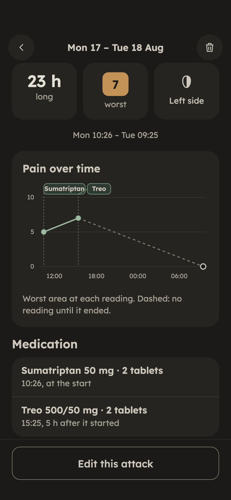
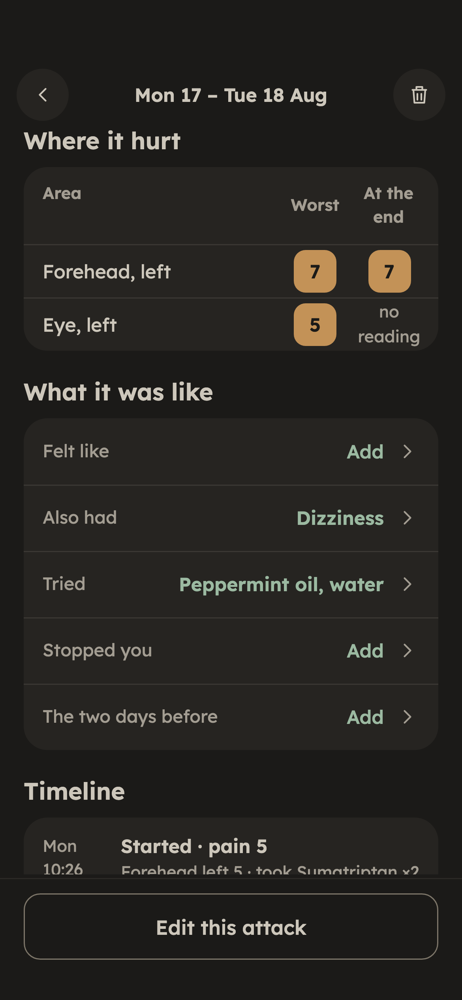
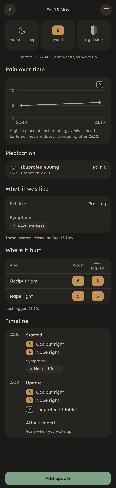

The v4 Attack detail board, for an attack that was gone when the person woke up, beside the shipped screen for the same kind of attack. Red marks are things the board showed that the stored data couldn’t say; the grey one is a change of design.
v4 board


Shipped

Board: “23 h long, Mon 10:26 – Tue 09:25” for an attack that was gone when they woke up.
Shipped: no length. “Ended in sleep”, and it’s left out of every length figure.
Board: a dashed line falling to 0, as if the pain was seen going away.
Shipped: nothing drawn after the last reading. “No reading after 23:10.”
Board: a column called “At the end” for readings taken hours before it ended.
Shipped: “Last logged”, with the time underneath.
Board: “Edit this attack” opened everything, with no limit.
Shipped: a row per editable thing, open for 48 hours (what it was like) or 7 days (the end), then closed.